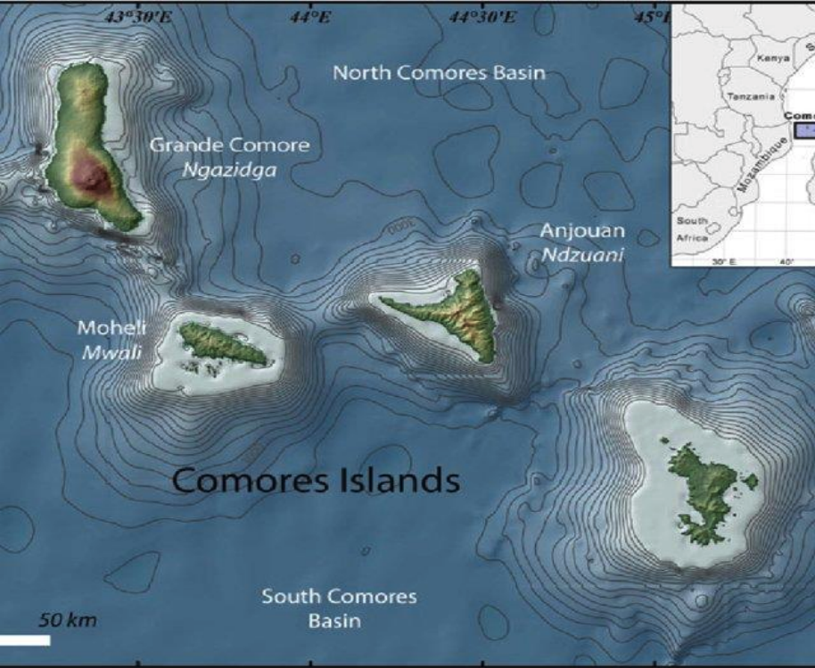
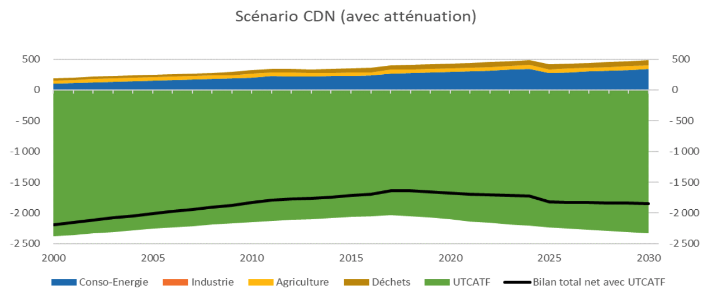
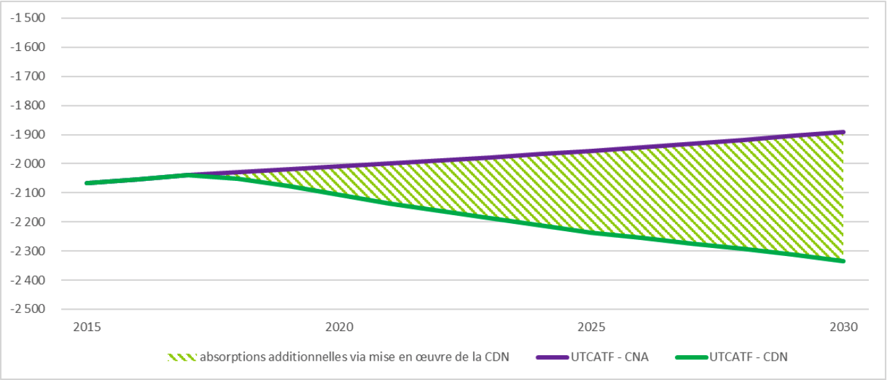

2021-2030
AEPA Drinking Water Supply and Sanitation
AFD French Development Agency
GCCA Global Climate Change Alliance
PA Protected area
CC Climate Change
CEDAW Convention on the Elimination of All Forms of Discrimination Against Women
UNFCCC United Nations Framework Convention on Climate Change
NDC Nationally Determined Contributions
CNA Normal Business Course (BAU)
CNCC National Committee on Climate Change
IOC Indian Ocean Commission
COP Conference of the Parties
CPAD Conference of Partners for Development
INDC Intended Nationally Determined Contributions
CRDE Rural Center for Economic Development
DGEF General Directorate for the Environment and Forests
GHG Greenhouse gases
IPCC Intergovernmental Panel on Climate Change
HDI Human Development Index
MFIs Micro finance institutions
GPI Women's Participation Index
LEAP Long range Energy Alternatives Planning
MRV Measurement, reporting and verification
MW Megawatts
SDG Sustainable Development Goal
ILO International Labor Organization
PACC Climate Change Action Plan
NAP National Adaptation Plan Process
NAPA National Action Program for Adaptation to Climate Change
PCE Emerging Comoros Plan 2030
SIDS Small Island Developing State
GDP Gross Domestic Product
PNEEG National Equity and Gender Equality Policy
UNDP United Nations Development Program
DRR Disaster Risk Reduction
SCA2D Accelerated Growth and Development Strategy
SONEDE National Water Management and Distribution Company
M&E Monitoring and Evaluation
TCN Third National Communication
LULUCF Land use, land use change and forestry
|
parameter |
Revised CDN |
|
Lens type |
% decrease in GHG emissions and increase in CO2 removals compared to the baseline scenario (Normal Course of Business or CNA, i.e. without mitigation action). The two scenarios diverge from 2018 because the NDC scenario integrates after 2015 the measures already implemented by the Comoros, planned from NDC 1. |
|
Perimeter |
The territory concerned covers the three islands of the Union of the Comoros: Anjouan, Grande Comores, Mohéli |
|
Gas Covered |
Carbon dioxide (CO2); Methane (CH4); Nitrous oxide (N2O); Fluorinated Gases (HFCs) |
|
Target year |
2030 |
|
Implementation period |
2020-2030 |
|
Objective of the NDC: |
|
|
PRG |
The GWPs from the IPCC's second assessment report are used, in line with the work of the Third National Communication and the BUR. GWP CO2 =1 , GWP CH4 = 21 , GWP N2O =310 |
|
Sectors Covered |
Energy, industry, agriculture, LULUCF, waste |
|
Key categories: |
Energy: Power generation Industry Road Maritime (navigation, fishing) Aviation Residential Commercial: Industry: Lubricant and solvent Refrigeration and air conditioning Farming: Breeding Cultivated soils LULUCF: Forests Cultivated Land Meadow and savannah Wet area Establishments Other lands Waste: Wastewater storage |
|
Emission in 2030 (CNA): reference scenario |
-1,260 kt CO2eq KtCO2Eq (excluding LULUCF) |
|
Methodology for estimating emissions |
IPCC 2006 methods are applied |
INTRODUCTION
The greenhouse gas (GHG) emissions of Comoros are negligible on a global level and represent approximately 0.001% of global emissions. However, the Union of the Comoros wishes to contribute to the international effort to combat global warming by pursuing its objective of being a carbon sink and promoting sustainable development.
By ratifying the Paris climate agreement within the framework of the United Nations Framework Convention on Climate Change (UNFCCC), the Union of the Comoros has reaffirmed its commitment to limit its GHG emissions through its first nationally determined contribution (NDC), submitted in September 2015. This first NDC set an emissions reduction target of 442 kt CO2eq in 2030 (compared to a reference scenario).
This document constitutes the revised NDC of the Union of the Comoros, by 2030. It is the result of an inclusive and transparent process, which lasted a little over a year, contributing to enhance the country's ambition in the fight against climate change, taking into account:
New guidelines for national development policies and strategies such as the Emerging Comoros Plan and the strategy for accelerated growth and sustainable development,
New priorities and costs for priority climate-related investments,
Analysis of new sectors and gases to consider and include in greenhouse gas inventories
At the same time, the country will pursue its socio-economic development in accordance with the vision of the Head of State to make Comoros "an emerging country by 2030, resilient to shocks in all dimensions of sustainable development".
The integration of the Gender dimension, in the implementation of this new NDC, reflects the concern of the Comorian government to better take into account the important role that Comorian women play in many sectors strongly impacted by climate change such as agriculture, water and forest management, health, disaster risk reduction as well as the specific impacts they suffer from their roles and responsibilities which differ from those of men in Comorian society .
However, successful implementation of the NDC requires putting in place the necessary institutional arrangements and working towards success factors to address the constraints encountered.
Given its limited resources, the planned actions to mitigate its greenhouse gas emissions are nevertheless conditional on obtaining international funding.

Located in the Indian Ocean at the northern entrance to the Mozambique Channel between the shores of Tanzania, Mozambique and Madagascar (43 and 45.5 degrees East longitude and -10.5 and -13.5 degrees South latitude), the Comoros archipelago is made up of 4 volcanic islands (Ngazidja: 1148km2, Mwali: 290km2, Ndzouani: 424km2 and Maoré: 370km2). The distance between them is about 30 to 40km and are isolated by underwater trenches more than 3500m deep. The country is on the main route of the oil giants which transport 30% of the world's oil production from the Middle East to Europe and America, representing nearly 5,000 tanker trips per year.
The Comorian population is estimated at 832,3221 and varies significantly from one island to another. The country is densely populated, with nearly 400 inhabitants per km² concentrated in the main coastal towns. The population is relatively young (56% is under 20) and is predominantly rural (70%).
With a gross national income per capita of $1,360, the Union of the Comoros has just joined the group of lower-middle-income countries, according to the latest World Bank ranking for 2019. The primary sector (agriculture, fishing and livestock) contributes 46% of GDP compared to 12.4% for the secondary sector and provides 57% of total jobs, of which 62.7% are occupied by women and 90% of operating income2.
The union of the Comoros is characterized by a humid tropical climate under oceanic influence with two seasons:
A southern summer season, hot and humid, from mid-November to mid-April with an average temperature of around 27°C at low altitude and maximums oscillating between 33 and 35°C and variable minimums around 21° and 24°C
a southern winter season, dry and cool from mid-June to mid-October with an average temperature of 23°C at low altitude and highs ranging between 27 and 29°C.
The country is particularly vulnerable to climate change, like all the other small island developing states (SIDS): analyzes of meteorological data have shown the existence of climate change which is manifested by a gradual decrease in rainfall , an increasing trend in annual temperature, rising sea levels, increased aridity and more drought.
At the same time, the frequency of extreme climatic and meteorological events such as tropical storms, floods, heat waves and episodes of drought have increased slightly and constitute the main hazards impacting the Union of the Comoros. Combined with anthropogenic pressures (deforestation, land degradation, sand extraction, obsolete agricultural practices, etc.) exerted on natural resources, these hazards are likely to seriously compromise the development efforts undertaken by the country in recent years and accentuate the vulnerability of certain ecosystems and groups of already fragile populations. Without ambitious measures, the cost of climate-related impacts was estimated in 2014 at 836 million US dollars by 20503, i.e. an average annual cost over the period of 23 million US dollars which, reduced to GDP in 20194 would represent 1 .9%.
The vulnerability study carried out in 2018 estimated the losses caused by the damage of natural disasters considered major at 0.39% of the average GDP over the period 1980 – 2017. However, this figure is an average over the period considered . and does not reflect the heterogeneity and overall damage caused by different events due to lack of data
Agriculture and biodiversity are the sectors most vulnerable to climate change, followed by forests, coastal areas, fisheries, water resources, health, and economic and social infrastructure.
Other sources of the country's vulnerability are related to:
an incidence of poverty4 which varies from island to island and seems to be higher in rural areas,
unemployment estimated at 3.7% in 2018 but which particularly affects young people (8.5%) and women (4.06%),
with relatively high population growth (2.24% in 2018)2 but is however lower than that of GDP (3.43% in 2018)3.
The Union of the Comoros plans, through this revised NDC, a net reduction of these GHG emissions, excluding LULUCF, of 23% and an increase in its net CO2 absorption sink of 47% on the horizon 2030 compared to the reference scenario. The overall cost of this ambition is estimated at 902 million euros, of which 96 million euros is unconditional, i.e. 5%.
Figure.1: GHG emissions according to the CNA scenario (KtCO2Eq)
The Union of the Comoros has a net, carbon-neutral balance, according to the CNA scenario, of around -1,260 ktCO2eq in 2030: the carbon sink offsets all emissions from other sectors.
The sectors currently emitting the most are the energy, agriculture and waste treatment sectors.
Without emission mitigation measures, under a normal course of business scenario, the net balance could decrease from -1,714 kt CO2eq in 2015 to -1,260 kt CO2eq in 2030.
Although the net balance of emissions is negative (CNA scenario), the Union of the Comoros still has advantages and potential for reducing its GHG emissions over the coming decade. The graph below illustrates the share of mitigation obtained through the reduction of emissions excluding LULUCF compared to a CNA scenario.

Figure.2: GHG emissions according to the CDN scenario (KtCO2Eq)
Sectors with potential for mitigation are Energy, LULUCF, Agriculture and Waste. The mitigation measures targeted by its sectors make it possible to slow the increase in emissions and increase carbon sinks, particularly in forests and on land in 2030 compared to the CNA scenario.
Priority mitigation actions (reduction of emissions and increase of absorptions in carbon sinks) to be implemented to strengthen low-carbon development and conditional on international financing, are presented in the table below.
|
Sector |
Contribution to the country's total mitigation efforts (KtCO2Eq) in 2030 |
Number of Measures |
Associated cost (in millions of €) |
|
Energy |
131 |
5 |
300 |
|
Agriculture |
- |
2 |
Not estimated |
|
Waste |
15 |
2 |
22.4 |
|
LULUCF |
443 |
6 |
47.2 |
|
Total |
589 |
15 |
369.6 |
Table 1. Conditional mitigation actions
Energy
The energy sector (energy production and consumption) presents significant mitigation potential, in particular through the use of renewable energies, including photovoltaics and geothermal energy for the production of electricity and the reduction of electricity consumption. use of firewood in the residential and industrial sectors.
Agriculture
Agriculture, a key sector of the Comorian economy, includes livestock activities (mainly cattle, goats and poultry), food crops and cash crops (ylang-ylang, vanilla, etc.). Emissions from the sector come mainly from livestock farming, via the enteric fermentation of cattle and the management of manure.
Given a production growth dynamic, it is not planned to consider a drop in the herd in this NDC. On the other hand, it is possible to reduce the import of mineral and organic fertilizers to promote the use of local organic fertilizers.
Waste
The treatment of waste (mainly food waste) is an important issue, because their collection and treatment is still insufficient. The associated actions are the improvement of collection, the development of biogas and compost.
Land use, land use change and forestry
The LULUCF sector is a key sector, it makes it possible to count the absorption of CO2 in connection with the growth of trees (forest, arboriculture, agroforestry) but it also generates emissions (collection of wood, deforestation, burning).
Mitigation actions targeting this sector will also contribute to strengthening the adaptation capacities of the Comorian populations.
The graph below illustrates the share of mitigation achieved through non-LULUCF emission reductions compared to a normal course of business (CNA) scenario. Over the period 2015-2030, 843 kt CO2eq of cumulative emissions are avoided by implementing mitigation actions.

Figure 3: Comparison of CNA and NDC scenarios for the balance sheet for all sectors (excluding LULUCF)(in kt CO2eq)
The additional absorptions obtained thanks to the actions of the NDC scenario in the LULUCF sector are presented in the graph below. Over the period 2015-2030, 3,103 kt CO2eq of cumulative additional absorptions are allowed by the implementation of mitigation actions.

Figure 4: Comparison of CNA and NDC scenarios for LULUCF and additional removals (in kt CO2eq)
Finally, the graph below presents the evolution of emissions according to the NDC scenario, showing that the country would remain a net carbon sink.

Figure 5: Evolution of emissions and absorptions according to the NDC scenario (in kt CO2eq)
Some mitigation actions are priorities, in the short term, because they are necessary for the implementation of other projects:
consolidation of the electrical network to reduce losses;
reduction of firewood, service and industrial wood, by promoting other sources of energy, protecting forest areas and promoting imported wood;
reduction of residential firewood, in particular through the use of high-performance wood burners;
improvement of waste collection (awareness, collection and treatment sites).
Other short- and medium-term priority actions that have significant mitigation potential include:
the continuation of development projects for photovoltaic power plants;
the launch of a first geothermal section (exploratory drilling and operating drilling);
afforestation, reforestation, agroforestry, arboriculture;
the increase and effective and efficient management of protected areas, particularly forests, to limit deforestation, wood harvesting and burning;
composting organic waste.
Projections obtained from the use of global climate models show an upward trend in temperatures as well as an increase in the number of hot days. The average annual temperature is thus expected to increase by 0.8 (RCP 2.6) to 2.1°C (RCP 8.5) by 2060 and by 1.2 (RCP 2.6) to 3.6°C (RCP 8.5) by here 2090.
Seasonal projections predict a decrease in seasonal precipitation, and an increase in precipitation during the rainy season.
Sea level has risen between +1 and +6 mm/year since 1992 in the Indian Ocean region. This sea level is also expected to rise by 4 mm per year over the next fifty years, corresponding to a potential average rise of 20 cm by 2050, twice as high as the rise observed over the past hundred years. (20 to 25 cm).
This rise in sea level combined with coastal erosion threatens coastal ecosystems, coastal forests, equipment and infrastructure, including roads, and most coastal localities.
The results of the vulnerability analyzes carried out so far in the Comoros show that the sectors most vulnerable to climate change are agriculture and biodiversity (very high vulnerability), forests, coastal areas, fisheries, water resources, health and economic and social infrastructure (high vulnerability). An analysis of the vulnerability of each of these sectors is presented in the technical report annexed to this revised NDC.
This vulnerability is likely to increase for most of these sectors, which urgently need to take action to deal with the effects of climate change.
3.2.1. General Strategy
Aware of the costs and damage that the impacts of climate change could generate on different sectors of the country's economy, the Union of the Comoros committed very early on to a process of planning adaptation measures. Adaptation to climate change has thus been integrated into certain public policy documents and national strategies, both general and sectoral: NAPA, National Communications, policy, strategy and National Action Plan on Climate Change.
In its revised general policy document for the period 2018-2021, the Strategy for Accelerated Growth and Sustainable Development (SCA2D), the Comorian government thus intends to reconcile structural transformation and diversification of the economy with the sustainable management of resources resources and resilience, particularly of the agricultural sector and rural communities, in the face of natural disasters and the effects of climate change.
Adaptation is also found in the ambition of the newly adopted Emerging Comoros Plan 2030 (PCE), which aims to make Comoros by 2030: "a country resilient to shocks in all dimensions of sustainable development".
3.2.2. Revised and realistic objectives to strengthen the country's resilience
The NDC participatory review exercise has made it possible to update and expand the adaptation objectives, monitoring indicators and 2030 targets for the sectors identified as the most vulnerable to CC in the Comoros (agriculture , biodiversity, forest, fisheries and coastal and marine ecosystems, water resources, health and economic and social infrastructure). In addition, the cross-cutting sectors of disaster risk reduction and the integration of adaptation and awareness-raising have also been prioritized. The table below lists the adaptation actions set by sector.
Table 2. Adaptation actions by vulnerable sectors
|
Sector |
Adaptation actions |
|
Agriculture and Livestock |
Development of a resilient and climate-smart agricultural policy |
|
Development of agro-pastoral irrigation |
|
|
Setting up an effective early warning and intervention system throughout the territory in the event of the emergence of new bovine or caprine diseases |
|
|
Biodiversity and forest |
Extension of the area with protected area status |
|
Extension of reforested area |
|
|
Fisheries and coastal and marine ecosystems |
Monitoring and restoration of marine and coastal ecosystems |
|
Awareness-raising and reassurance of fishermen in the face of climatic hazards |
|
|
Water Resources |
Access of the population to an improved water source |
|
Dissemination and adoption of the principle of integrated water resources management |
|
|
Health |
Developing a sustainable strategy to fight malaria and new emerging diseases such as COVID-19 |
|
Development and implementation of an effective early warning and intervention system throughout the territory in the event of the emergence of new diseases. |
|
|
Economic and social infrastructure |
Development and implementation of plans for the development of economic and social infrastructure integrating climate change |
|
Rehabilitation of current road infrastructure |
|
|
RCR |
Identification and mapping of areas vulnerable to the risk of natural disasters. |
|
Implementation of a building standards system that takes disaster risk into account |
|
|
Integration and awareness |
Awareness of the impacts of CC |
|
Capacity building at all levels on the definition and implementation of CC adaptation measures |
Specific short and medium term actions and project ideas are identified for each sector in an attached implementation plan, with a prioritization of these actions and a cost estimate, given for each action / project ideas .
The Union of the Comoros ratified, in addition to other human rights conventions, the Convention on the Elimination of All Forms of Discrimination against Women (CEDAW) on October 31, 1994. It adhered to the Beijing Declaration and Platform adopted at the 4th World Conference on Women in 1995 and was one of the first African countries to ratify in 2004, the Protocol to the African Charter on Human and of Peoples on the Rights of Women in Africa.
In 2008, the country adopted a National Gender Equity and Equality Policy (PNEEG) which aims to give priority to better participation of women in economic development activities, decision-making whether political, traditional or religious, to the strengthening of the capacities of women and girls, the right to education, the right to health, the legal status and the application of the fundamental rights of women and girls.
The vision of the government of the Union of the Comoros is to "make the Comoros an emerging country by 2030, respectful of human rights, gender equality and promoting the rule of law". Thus, in 2017, the law on parity law establishing a quota of at least 30% of women in elective and nominative functions was adopted to, among other things, encourage women's political participation and representation. electoral processes.
In 2018, the revised Constitution guarantees in its article 30 “the rights of women to be protected by the public authorities against all forms of abandonment, exploitation and violence. Through article 34, it recognizes their "right of access to political bodies of local and national representation" and in its article 36 it provides for "a fair and equitable distribution between men and women" in the composition of the Government. .
In terms of gender equality, although women represent approximately half of the total population (49.6%), they are still underrepresented at all levels, except in the agricultural sector where they occupy 63 % of jobs in food, market gardening and poultry production. They can sometimes work in cash crops but rarely at the marketing level, unlike in the fishing sector where they are in charge of sales and not production.
At the political level, since 2003, the Women's Participation Index (IPF) in the Comoros is 0.3034, which reflects the virtual absence of women in decision-making and decision-making bodies, which would be due to the heavy responsibilities imposed by the home, which leave them little free time to devote to public affairs and the weight of traditions that recognizes more power to men both at the family level and in society in general5.
The informal economy plays a major role in job creation, income and production. According to ILO statistics6, the share of informal employment in employment total in 2019 is estimated at 89%, occupying 86% of men and 94% of women. Slightly more than 77% of the latter are in vulnerable employment, that is to say working on their own account mainly in agriculture and petty trade or as a family employee, compared to 54% of men.
Around 40% of households are female single-parent households (while only 2.8% of households are headed by a single male).
Access to traditional bank credit is very limited for women entrepreneurs who cannot meet the conditions required to obtain a loan. Microfinance Institutions (MFIs), with their more flexible conditions, are the main alternative (50% of MFI clients are women).
In rural areas, women's livelihoods largely depend on natural resources (water, forest products, agriculture) which are highly dependent on climatic hazards. The impacts of CC (land and forest degradation, erosion, water stress, natural disasters) lead to the scarcity of resources, making the activities carried out by women more difficult.
Women's difficult access to economic and productive resources further weakens their ability to adapt to climate change.
Better access to renewable energies with adapted technologies would allow access to energy services in terms of lighting, cooking and productive activities which would reduce their workload and free up the time they could devote to other tasks including income generating.
The initiatives carried out in recent years by the Comorian government with the support of development partners are helping to strengthen the empowerment of women by offering them more economic opportunities and income-generating activities. Similarly, efforts are made in terms of gender parity in capacity building activities.
Specifically, the Comorian government has implemented projects in the field of agriculture with an environmental impact, including the fight against climate change, in which 45% of the beneficiaries are women7. The latter, like men, have been made aware of issues related to climate change, have received training and have had access to more efficient tools and techniques in agriculture. The National Emergency Preparedness and Response Plan has taken gender into account in the education and protection sector, which should result in the "establishment of mechanisms for monitoring and raising awareness among the populations displaced from different forms of abuse, violence and sexual exploitation, prevention of abuse, violence and sexual exploitation of children and women, proper care for each of the vulnerable groups identified by providing the human resources and essential materials and the establishment of basic protection and supervision structures adapted and accessible to vulnerable groups, in particular women and children”.
Thus, the Union of the Comoros intends to continue its efforts to adopt a human rights and gender-sensitive approach in all its activities related to climate change and its revised NDC in particular, in accordance with the decision 18/CP.20 of the Lima work program on gender adopted by the parties at the UNFCCC COP 20.
It is committed to improving the participation of women and any other vulnerable group in the planning and decision-making process as well as in capacity building in terms of education, training and access to technologies.
Gender-specific analyzes will be carried out in order to better understand the qualitative differences concerning women and men, girls and boys and to better take into account the needs, rights and priorities of each. Monitoring will incorporate the systematic collection of sex- and age-disaggregated data to track the gender-sensitive impact of climate change actions and the effectiveness of gender mainstreaming initiatives. Gender-specific baselines and indicators will be defined to track progress on gender equity.
The Union of Comoros aims to consolidate the existing mechanisms for collecting, sharing and monitoring data for the evaluation of the implementation of the NDC.
Thus, the National Committee on Climate Change (CNCC) created by Ministerial Order No. 18-009 in 2018 will be reviewed in terms of its composition and size, in order to ensure greater representativeness of sectors and different groups that make up Comorian society, all concerned by the issue of climate change on the one hand and better mobilization of its participants by limiting their number, on the other hand. Its prerogatives will also be reviewed. The validation of the feasibility study for the establishment of a national climate observatory and the mobilization of the human and financial resources necessary for its operation will complete the institutionalization of the collection, harmonization, organization, storage and facilitation of access to climate-related data, which ultimately constitute its vocation.
In terms of monitoring, the institutional mechanism put in place as part of the preparation of the first biennial report and the third national communication on climate change for the national inventories of GHG emissions will be strengthened.
As for adaptation measures, their monitoring will be done through the existing sectoral working groups. The establishment of a single, institutionalized and centralized monitoring system for the various technical and political aspects of the NDC is envisaged and should be quickly supported. The results of this monitoring will be communicated to the stakeholders involved in the implementation of the NDC and to the decision-makers (at the local, sectoral, national level) allowing them, if necessary, to take corrective adjustment measures.
Strengthened climate governance
The Union of the Comoros undertakes to operationalize an intersectoral structure8 which brings together all the stakeholders concerned by the issue of climate change by allocating the necessary human and financial resources to it so that it has the means to ensure effective and transparent management of the country's climate commitments.
It also undertakes to ensure the computerization and institutionalization of the inventory, projections and monitoring system in order to avoid the loss of information between two exercises and to allow continuity in the work carried out by different teams.
A robust monitoring and evaluation system
In order to ensure the effectiveness of the implementation and the effectiveness of the actions planned as part of its contribution, the Union of the Comoros will establish a rigorous system for monitoring and evaluating actions and the results achieved which will also make it possible to adjust and possibly redirect actions.
This system will be based on a comprehensive Measurement, Reporting and Verification (MRV) approach, and will apply to all components of the national GHG emissions mitigation strategy. The Comorian MRV system will revolve around three main components of GHGs, namely:
The MRV of national GHG emissions, which will focus on the regular preparation of GHG inventories, their reporting and their verification;
The MRV of mitigation measures, which will focus on the implementation of the actions presented in the NDC as well as their impacts in terms of reducing GHG emissions;
The MRV of support, which will be responsible for monitoring, notifying and verifying the support received by the Union of the Comoros in terms of capacity building, technology transfer and financial support.
External financial and technical support
The Union of the Comoros is counting on the international community to succeed in consolidating the efforts undertaken for more than 20 years in the fight against climate change. Indeed, international support in the form of financing, capacity building and technology transfer is necessary to support the implementation of the revised NDC:
Financial support
The Union of the Comoros will need a global envelope of more than EUR 1.301million9 to carry out the implementation of its NDC, i.e. approximately an average annual amount of EUR 130 million, including at least EUR 902 million for mitigation measures and EUR 399 million for adaptation. Given its very limited resources, the Union of the Comoros cannot undertake its measures without the help of the international community, in particular within the framework of the technological and financial support effort between countries promoted by the Paris agreement but also through the Green Climate Fund, funding from multilateral or bilateral partners, or other existing or future funding mechanisms, including from the private sector or from transfers from the diaspora.
A significant part of the projects that are part of the Emerging Comoros Plan 2030 (PCE) were presented at the Conference of Partners for the Development of the Comoros (CPAD 2019) which was held in early December 2019 in Paris , with the support of France, the World Bank Group, the United Nations Development Program (UNDP) and the African Development Bank (ADB). At the end of this conference, approximately 4.3 billion US dollars in financial commitments were announced, including 1.6 billion by bilateral and multilateral partners and 2.7 billion by private sector players.
World Bank (2018), (https://www.donnes.banquemondiale.org),↩
Union of the Comoros: Climate Change Policy, Strategy and Action Plan (2015)↩
World Bank, (https://www.data.worldbank.org).↩
National Human Development Report (2006)↩
Source: Independent Country program evaluation of Union of Comoros, UNDP IEO, May 2019↩
“Women and men in the informal economy: a statistical overview” ILO, 2019.↩
Country report on progress made in the implementation of the Beijing + 25 Platform for Action; National Commissariat for Solidarity, Social Protection and Gender Promotion.↩
CNCC members and those who will be responsible for monitoring the implementation of the revised NDC if they are ↩
This is an indicative minimum estimate, some costs could not be estimated.↩